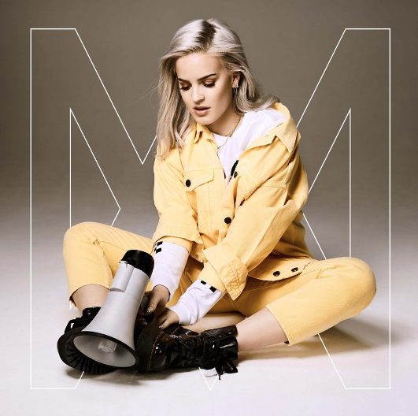

|  |
anne marie- 2002
I will always remember
나는 항상 기억할거야
The day you kissed my lips
네가 내 입술에 키스했던 그 날을
Light as a feather
깃털처럼 가벼웠어
And it went just like this
그리고 이렇게 지나왔지
No, it's never been better
아냐, 결코 더 좋을 수 없어
Than the summer of 2002
2002년 그 여름 보다
We were only eleven
우리는 겨우 11살이였지
But acting like grownups
어른처럼 행동했지만
Like we are in the present
우리가 지금 그렇듯이
Drinking from plastic cups
플라스틱 컵으로 마시면서
Singing love is forever and ever
사랑을 노래하는 건 영원할거야
Well, I guess that was true
글쎄, 나는 진심이였다 생각해
Dancing on the hood in the middle of the woods
숲 속 후드 위에서 춤을 춰
Of an old Mustang, where we sang
우리가 노래했었던 오래된 머스탱 위에서
Songs with all our childhood friends
우리의 어린시절 친구들 모두와 함께했던 노래들
And it went like this, say
그리고 이렇게 했었지, 자
Oops I got 99 problems singing bye, bye, bye
아 나는 bye, bye, bye를 부르며 99개의 문제들을 겪었어.
Hold up, if you wanna go and take a ride with me
기다려, 나와 같이 떠나고 싶다면
Better hit me, baby, one more time
말해줘, baby, 다시 한번
Paint a picture for you and me
너와 나를 위해 그림을 그려
Of the days when we were young
우리가 어렸을 때 나날들을
Singing at the top of both our lungs
목청껏 노래해
Now we're under the covers
이제 우리는 같이 이불 밑에 있어
Fast forward to eighteen
빠르게 18살이 되었지
We are more than lovers
우리는 연인들보다 더한 사이야
Yeah, we are all we need
그래, 우리는 우리가 필요해
When we're holding each other
우리가 서로를 붙잡고 있으면
I'm taken back to 2002
2002년 그 때로 돌아가
Yeah
Dancing on the hood in the middle of the woods
숲 속 후드 위에서 춤을 춰
Of an old Mustang, where we sang
우리가 노래했었던 오래된 머스탱 위에서
Songs with all our childhood friends
어린시절 친구들 모두와 함께했던 노래들
And it went like this, say
그리고 이렇게 했었지,
Oops I got 99 problems singing bye, bye, bye
아 나는 bye, bye, bye를 부르며 99개의 문제들을 겪었어
Hold up, if you wanna go and take a ride with me
기다려, 나와 같이 떠나고 싶다면
Better hit me, baby, one more time
말해줘, baby, 다시 한번
Paint a picture for you and me
너와 나를 위해 그림을 그려
Of the days when we were young
우리가 어렸을 때 나날들을
Singing at the top of both our lungs
목청껏 노래해
On the day we fell in love
우리가 사랑했던 그 날에
On the day we fell in love
우리가 사랑했던 그 날에
Dancing on the hood in the middle of the woods
숲 속 후드 위에서 춤을 춰
Of an old Mustang, where we sang
우리가 노래했었던 오래된 머스탱에서
Songs with all our childhood friends
어린시절 친구들 모두와 함께했던 노래들
Oh, now
Oops I got 99 problems singing bye, bye, bye
아 bye, bye, bye를 부르며 99개의 문제들을 겪었어.
Hold up, if you wanna go and take a ride with me
기다려, 나랑 같이 떠나고 싶다면
Better hit me, baby, one more time
말해줘, baby, 다시 한번
Paint a picture for you and me
너와 나를 위해 그림을 그려
Of the days when we were young
우리가 어렸을 때 나날들을
Singing at the top of both our lungs
목청껏 노래해
On the day we fell in love
우리가 사랑했던 그 날에
On the day we fell in love
우리가 사랑했던 그 날에
On the day we fell in love
우리가 사랑했던 그 날에
On the day we fell in love, love, love
우리가 사랑했던 그 날에